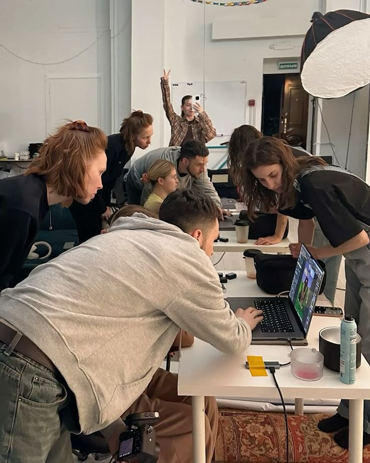

On the account
The project page
Name, who it's for, and what you've already tried. One page a reader can finish.
Rural Tunisia
A morning in a youth centre, a kitchen, or a market. After that, the account keeps the project, the lesson, and the next meeting.

On the account
Name, who it's for, and what you've already tried. One page a reader can finish.
Uploaded
A market day, a season on the family land, a job. The file name saves now; the file itself waits on storage.
Between meetings
Short, in Arabic, French, or English, tied to the town rather than a curriculum written for a capital.
Face to face
When a town books one, it sits on the same page as the project. You mark that you'll go.
RISE MED runs entrepreneurship and social innovation sessions for young people in rural Tunisia. You spot a problem on your own street, try a small offer, and explain the work to someone who might fund it. That part stays face to face.
The account is for the days after. It holds the next lesson and the project file, and it can help you push a draft in the language you actually think in. It doesn't replace the meeting.
You leave a session with one page changed. The next session starts from that page.
Seven places. You use the ones that match the week you're in, and you ignore the rest.
Communities
Kasserine, Sidi Bouzid, Gafsa, Béja, plus a table for people selling food from a kitchen. You join, then you can post. If you haven't joined, the box stays shut.
Courses
Pricing a service. The first talk with a buyer. What a batch costs, including the hours.
In person
Workshops, a market walk, an office hour, a reading circle. Mark that you'll go.
Funding
What the money buys, and what happens if it doesn't come. Investors on the same account can read the request.
Offers
A grant, a loan, an hour of reading, a place to work. You can say you're interested.
Forums
How you found the first buyers. Which language the project page should live in.
Share
Someone can mark it useful, or reply. A note that you took soap to the Tuesday market and didn't have a price is more useful here than a clean success.
Examples, so you can see the shape. A town sets the real day. Nothing below is a booking.
Saturday
morning
Kasserine youth centre
Bring the project you're actually working on, even if it's one page.
One
afternoon
Le Kef, cultural centre
Ten minutes on what you need the money for. No slides.
Before
the heat
Sidi Bouzid, Tuesday market
Walk two stalls with someone who already sells, and write the price people are paying.
Weekday
afternoon
Gafsa, a kitchen or a workshop
Oil, jars, the bus, and the hours. The number has to include the hours.
Evening
Kairouan
Rewrite the project page in the language you think in. Arabic and French can sit on the same table.
Once
a month
Béja, or a call if the road is bad
Four project pages, read out loud. The writer stays quiet until the end.
Market
morning
Medenine souk
You leave with names of people who asked a price, not with a poster.
You keep a project, a CV, and a short record of what you've already done. Courses open at your level. When a session is listed near your town, it sits on the same page as the work.
Join as a young personLessons are written to run in
Read the project in the founder's words, then answer the request. The meeting can still happen in the town.
The project page, the experience they uploaded, and what they say they need before you should bother meeting.
A sum, what it buys, and what happens if the money doesn't come. You can post an offer of your own: a grant, a loan, mentoring, an introduction, a place to work.
The conversation can still happen where the work is. A 19-year-old shouldn't have to travel to Tunis just to be read.
No. The setup asks where the work stands, and "I don't have one yet" is an answer. If you do have one, it wants a name, even a temporary one, and what you want to be true in six months.
The session is in a room. The account is what you open the next morning: lessons, the project file, the group, the funding request. AI help is for those in-between days, when you need to push a draft in your own language.
Not on this account. You pick one role after you sign up, because the home page is different. Someone funding work shouldn't be filling in a six-month goal for a project they aren't building.
Sign-in goes through Supabase. You'll get a confirmation mail before the first sign-in if the project asks for one. Posts, funding requests, and RSVPs in this build still stay on the device.
The page you're actually using. A sample if you have one. A price, even if you're unsure of it. Slides are optional and usually in the way.
Youth keep the project and the lessons. Investors read that and answer a request.